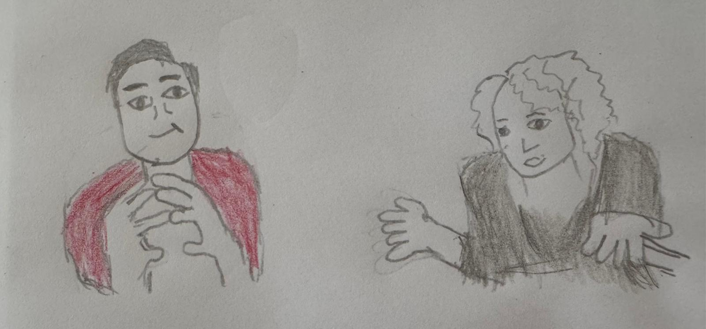

This website shows what are some of the thoughts that Singaporeans have. It also shows their feelings in different situations.
the Revelation
‘Cheating!’ Nancy shouted. Mustafa looked away, his body was stiff.
Nancy threw the game cards on the table
—---------------------------------------------
(Dear reader, what caused Nancy to behave in such a manner?
Allow me to bring you back in time to what was happening 15 minutes ago….)
Mustafa was already inside a retail shop that sold trading card games. There are tables and chairs there meant for the shop’s customers to use them during gameplay events.
(See! Mustafa is standing there despite the empty chairs around him.
His eyes swept across the entire shop.Was he being alert to this surroundings? Nancy had just entered the shop, did you see the grin on her face? It seemed she felt ‘perfectly at home.’)
A few moments later, Nancy and Mustafa sat opposite each other with a table in between them.
The game was starting, it was decided that they would play against each other in the current round.
(Notice that as they took their seats, they never exchanged any greetings?)
(Let’s move forward in time a few minutes later, right here….)
‘I am going to play Revealing Light.’ Mustafa declared.
He took the top card from his deck, flipped it over such that the front face of the card was visible.
He then placed it on the table. He repeated this action four more times.
Nancy hunched over, looking intently at Mustafa’s cards while he performed that sequence of action.
Mustafa stopped revealing the cards.
‘Cheating!’ Nancy shouted.
(We have come back to the beginning of the story.)
Mustafa looked away, his body was stiff.
Nancy threw the game cards on the table .
Someone in the shop jeered.
Mustafa had just won this round of the game after performing ‘Revealing Light’.
He dared himself to look at Nancy’s face. She sat straight on the chair and appeared to be mumbling something under her breath,her eyes were closed.
She seemed much more composed now compared to just a few seconds ago.
‘Are you heading to the Pro League this Saturday? ’Mustafa ventured.
‘No, I promised to visit my friend’s home that day.’’ Nancy replied.
-End
The world values survey was conducted in Singapore in different years. In 2020, there were 2012 Singaporean respondents.
The interviewees were given 6 broad priorities(family,work,friends,leisure time,religion,politics) to rank.
The higher the ranking, the more important it is for the individual.
Work was ranked second during the year 2002. In 2020, one new priority called wealth was added.
Out of the 7 priorities, work was placed fifth.
Generally, people treasured friends,wealth and leisure time more compared to work.
Reference: Webpage- What Do Singaporeans Hold Dear to Their Hearts?
Global is Asian (12 April 2021)Lee Kuan Yew School of Public Policy.
Short Story
Koh was driving his car towards the hospital to accompany his mother there.
“Beep, Beep”, there was an incoming phone call, Koh’s mobile phone’s screen lit up.
The call was from Victor, Koh promised to bring home Victor’s belongings that were left behind in the car.
Koh’s mother began a monologue about the long journey from her home to the hospital for medical appointments.
“Why do you keep wiping your face with your hand?”
Koh’s mother asked. Koh shook his head, he just realised that he was gripping the steering wheel tightly with his hands.
After half an hour, both of them are inside the doctor’s consultation room. Koh was looking into his notebook after the doctor suggested a date for his mother’s next appointment.
“Bam!”,the notebook was slammed on the doctor’s table. Koh just recalled that he was not able to accompany his mother on that particular day.
“Don’t need to get angry with the notebook”, the doctor remarked.
It is observed that as the population ages, more seniors are finding themselves needing to take care of other seniors in the family.
In addition, elderly patients with many medical conditions need to have sessions with different medical specialists in one hospital. Caregivers encountered difficulty arranging time and transport for visiting each specialist on different days.
Against such a background, letters sent to The Strait Time's Forum discussed possible ways to ease patients and caregivers:
1. If a patient does not have any clinical abnormality that warrants investigation. Remove the search for a medical solution that does not enhance the quality of life of a patient. Conducting unnecessary tests when there is no obvious benefit can lead to unnecessary stress for both the patient and the caregiver.
2. The suggestion was for the hospital to schedule a patient’s different specialists’ appointment on the same day. This is achievable because specialist run clinics operate everyday.
3. Proposed that the medical specialists to run their specialists’ clinics at polyclinics nearer to patient’s homes. It is easier for a specialist to operate at a polyclinics instead of asking many elderly patients to visit one hospital.

Who is the scammer?
There were different voices who talked about scams that occurred in Singapore. Their thoughts were submitted to The Straits Times.
An individual mentioned that online social networks, e-commerce platforms have to create safeguards against fraud. It also stated that these companies should help in reimbursing victims who were scammed through such mediums. That is because people easily get exposed to scams at the aforementioned platforms.
Another person talked about how decisions are being made when one is targeted by a scam. When we are anxious, it has a negative impact on our critical thinking. Scammers make use of our vulnerabilities when they try to influence their victims to think and feel in a certain manner.
Lastly, one person wrote that he/she had been reporting advertisements which contain scams on online social media platforms.
However, those platforms responded that the reported advertisement did not break any of the company’s guidelines, the advertisements remain intact on the Web. The writer felt that the platforms are not taking responsibility and wondered if they were ways to impose a penalty on them.